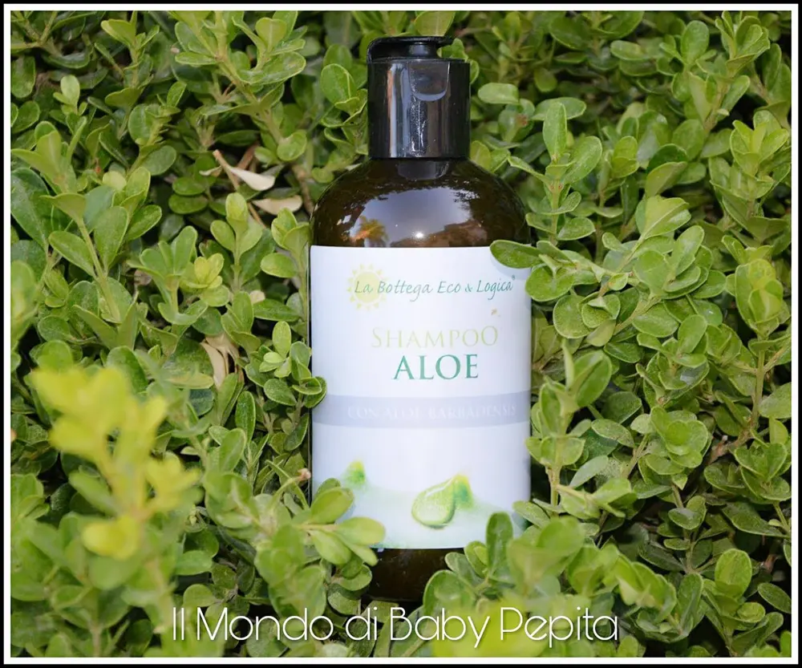
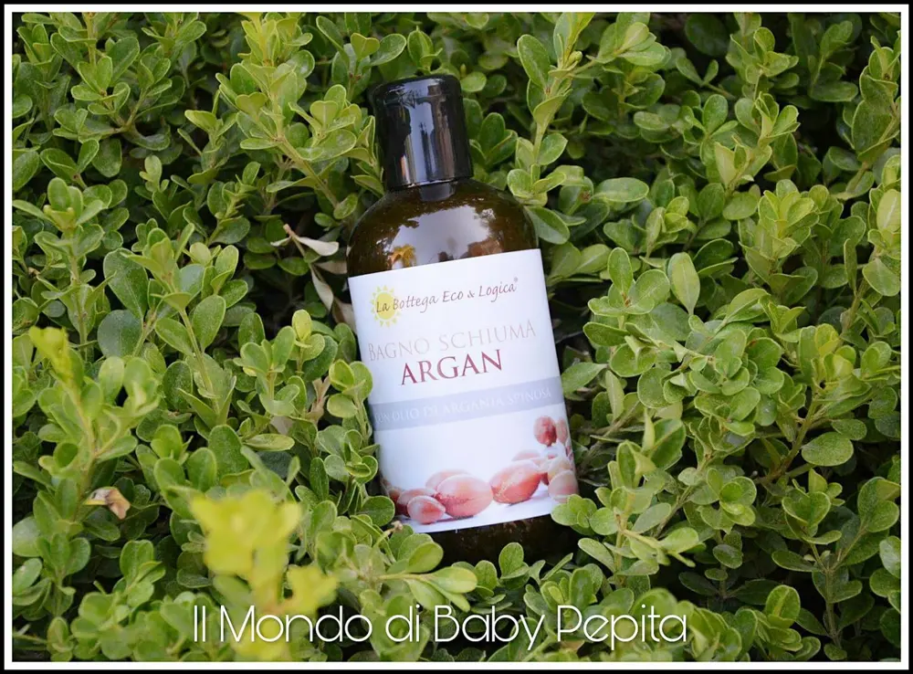
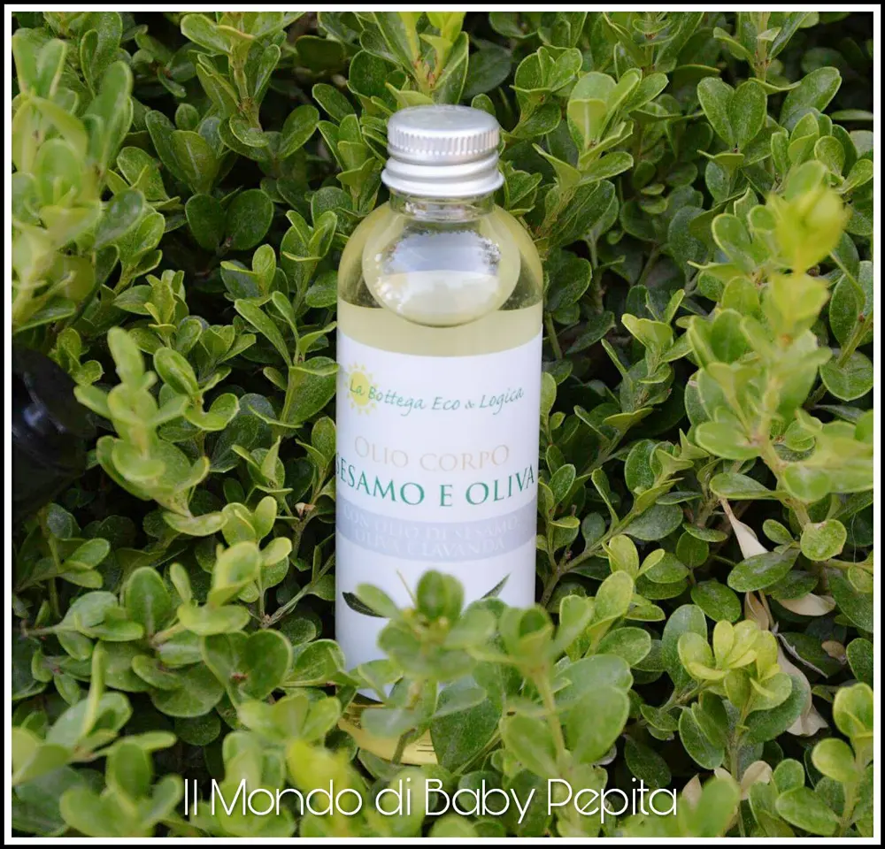
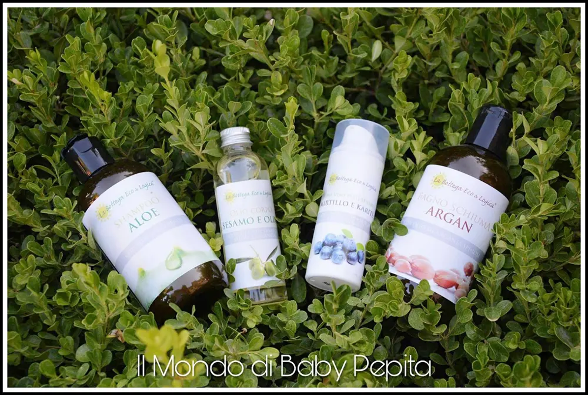

Bio: La Bottega Eco & Logica

Con una pelle delicata sono già abituata ad usare quasi sempre prodotti bio.
Oggi ho il piacere di mostrarvi dei fantastici cosmetici eco bio.
Bio: La bottega Eco & Logica nasce con l'obiettivo di sensibilizzare le persone all'ecologia.
I prodotti di quest'azienda infatti, sono realizzati con materiale riciclato e riciclabile, che rispettano l'ambiente e la salute delle persone.
Quindi oltre a prenderci cura di noi stessi, ci prendiamo cura anche dell'ambiente che ci circonda.
Io sono stata gentilmente omaggiata di una linea di prodotti di erboristeria ecobio che sono stati realizzati con ingredienti naturali di qualità.
Ho ricevuto: • shampoo all'aloe • bagnoschiuma all'argan • olio corpo al sesamo e oliva • crema viso pelli sensibili al mirtillo e karitè
Shampoo all'aloe

Oltre ovviamente alla sua funzione di shampoo è anche molto lenitivo. Non aggredisce il cuoio capelluto perchè grazie alla pianta dell'aloe agisce in modo delicato. Contiene infatti il 10% di succo di aloe e oli ed estratti vegetali.
Questo shampoo è senza glicoli, etossilati e paraffina. Quindi davvero naturale.
Non fa schiuma ed è inodore.
INCI:Aqua, Aloe barbadensis leaf juice*, Coco-glucoside, Ammonium lauryl sulfate, Sodium coco-sulfate, Tocopherol, Panthenol, Citrus limon peel oil, Sodium cocoyl hydrolyzed amaranth protein, Glyceryl oleate, Citric acid, Sodium chloride, Benzyl alcohol, Sodium benzoate, Potassium sorbate, Limonene. *da agricoltura biologica certificata.
Prezzo:8,50 €
Bagnoschiuma all'argan

Deterge in profondità nutrendo e rispettando la pelle. Contiene olio di Argan biologico estratto con spremitura a freddo. Ideale per le pelli disidratate e spente. Anch'esso inodore e privo di schiuma.
INCI: Aqua, Coco-glucoside, Glycerin, Sodium coco-sulfate, Parfum, Argania spinosa kernel oil*, Tocopherol, Sodium arganamphoacetate, Lactic acid, Xanthan gum, Caprylyl/Capryl glucoside, Benzyl alcohol, Sodium benzoate, Potassium sorbate. *da agricoltura biologica certificata.
Prezzo: 8,50 €
Olio corpo al sesamo e oliva

E' un olio corpo composto da molti oli ed estratti naturali per regalare al tuo corpo un piacevole massaggio nutriente e protettivo.
Al suo interno ha la vitamina A ed E, l'estratto di equiseto ed altri componenti che rendono questo prodotto delicato e naturale. È un olio davvero efficace che mantiene la pelle morbida ed idratata facendola apparire subito più luminosa senza ungere molto. Anche quest'olio è senza glicoli, etossilati e paraffina.
Ottimo anche per massaggi in quanto scivola benissimo ed ha un profumo avvolgente.
INCI: Oryza sativa bran oil, Sesamum indicum seed oil*, Helianthus annuus seed oil*, Olea europaea fruit oil*, Equisetum arvense extract*, Prunus amygdalus dulcis oil*, Persea gratissima oil*, Tocopherol acetate, Lavandula hybrida oil*, Linalool, Retinyl palmitate. *da agricoltura biologica certificata.
Prezzo: 12,00 €
La crema viso pelli sensibili al mirtillo e karitè è una crema ideale anche per arrossamenti. Protegge la pelle dalle aggressioni esterne, lasciandola morbida e luminosa. Ottima anche come base makeup, ha un profumo di mirtillo che è davvero piacevole.
Io l'ho usata anche dopo aver fatto la ceretta alle gambe e mi è piaciuta molto.

Prezzo: 17,27 €
Per questi prodotti super naturali e riciclabili io consiglierei ogni singolo articolo, non costano tantissimo, durano tanto e in più facciamo bene a noi stessi, in quanto sono biologici, e all'ambiente.